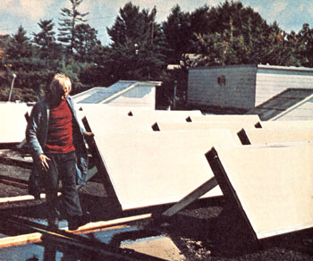

January 27, 1976 was a momentous day in history for the staff here at THE Mother Earth News (restricted) ... because at around two in the afternoon, the heat came on in our editorial offices. Not just any heat, mind you. Solar heat.
A thick cloud cover and day-long drizzle kept the outside temperature that afternoon to a -mere 40 degrees Fahrenheit ... yet enough thermal energy had accumulated in our system's water storage tanks to provide honest-to-goodness warmth for 1,600 square feet of office space. It was enough to make a natural gas salesman cry.
MOTHER's experiment in solar heating began last July, when four Georgia Tech students made some preliminary calculations that led to the design and construction of the 30 solar collectors that presently adorn MOTHER's roof. By the following season, other talented folks-such as engineer Joe Lane, carpenter Bob Pace, and all-'round handy guy Dennis Burkholder-were brought in on the project, and to ensure the success of MOTHER's efforts, a Jacksonville, Florida engineering firm was eventually retained for consultation.
The upshot of seven months' hard work-and many weeks of waiting for parts-is that MOTHER now has: [1] 30 collectors, each measuring three feet by eight feet, facing magnetic south on the roof, [2] four 550-gallon water storage tanks in the basement which are maintained at 110 degrees or more whenever the system is in daytime operation, and [3] plumbing connecting collectors, tanks, and the forced-air heating ducts that lead to the magazine's editorial department.
We won't go into a long, detailed explanation here of just how the system functions- that you can read in the very next issue of MOTHER, we promise-but we do want our readers to know that the system is completed and really works.
Now MOTHER (like so many homes and businesses these days) is on her way to being less dependent on outside sources of energy . . . sources which are, at best, destined to be a mere "flash" in history's pan when compared to Ole Sol's steady blaze.-KT.
|
 |
|
|